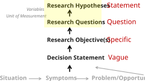
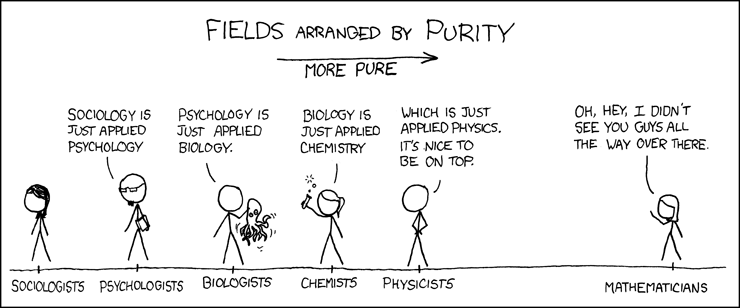
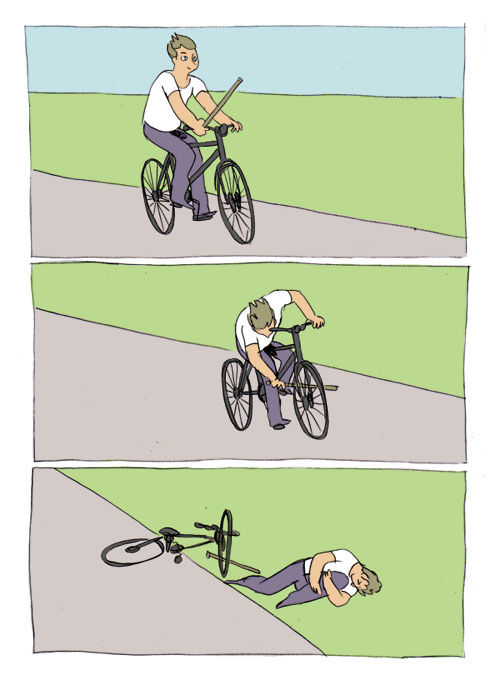

“If it disagrees with experiment, it’sWRONG. In
that simple statement is the key to science”
—Richard Feynman


What are we interested in?
At what level can we measure it practically?
Rigor of science vs. pragmatics of business
Hypothesis
How do the things we are measuring work together?
What just happened? (Observation)
Why? (Hypothesis)
Oh, that’s probably why. (Theory)
The Fundamental Rules (Law)
What just happened? (Observation)
Why? (Hypothesis)
Oh, that’s probably why. (Theory)
The Fundamental Rules (Law)
What just happened? (Observation)
Why? (Hypothesis)
Oh, that’s probably why. (Theory)
The Fundamental Rules (Law)
What just happened? (Observation)
Why? (Hypothesis)
Oh, that’s probably why. (Theory)
The Fundamental Rules (Law)
What just happened? (Observation)
Why? (Hypothesis)
Oh, that’s probably why. (Theory)
The Fundamental Rules (Law)
What just happened? (Observation)
Why? (Hypothesis)
Oh, that’s probably why. (Theory)
The Fundamental Rules (Law)
Rules (Laws) Don’t Change
What we ‘know’ changes with our understanding
On/Off Campus
GPA
Exercise
BMI
Keep track of (control)
Input
affects
GPA
On/Off Campus
BMI
Exercise
Measure outcome
Prediction
Hypothesis
An educated guess about how the independent variable affects the dependent variable.
#load the raw data set
df <- read_csv("../shared/data/accident_wi.csv")
#Add population information by zip code
#Select Population, Duration, Temperature…
#Create a measure that is a ratio between temp/distance
df <- df %>%
mutate(temp_dist_ratio = `Temperature(F)`/`Distance(mi)`)
#Test Hypothesis duration longer with higher population
#I tried idt(duration~population) it didn’t work
df %>%
idt(`Distance(mi)`~Sunrise_Sunset)[1] "Independent variable converted to a factor using as.factor()"$analysis_type
[1] "Independent t-Test, Two Tailed test"
$results
[1] "t(3071.33) = -6.532, p < .001, d = -0.19, bf10 = 5.042e+10"
$descriptive_statistics
Group N Mean Standard_Error
1 Day 5.74e+03 6.41e-01 1.60e-02
2 Night 2.17e+03 8.99e-01 3.61e-02
Me planning to get my
posit.cloud project to workStarting 15 minutes before
it is due🔥🔥🔥